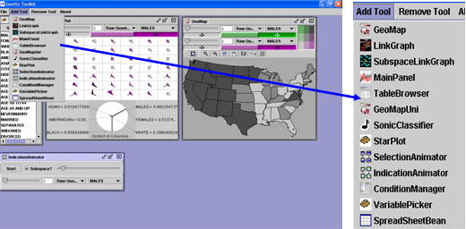
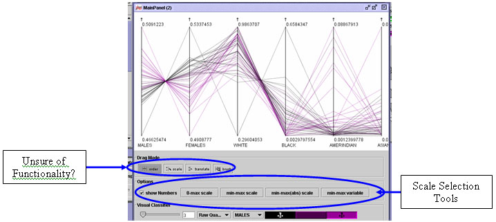
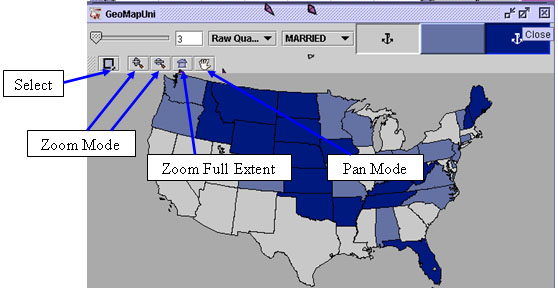
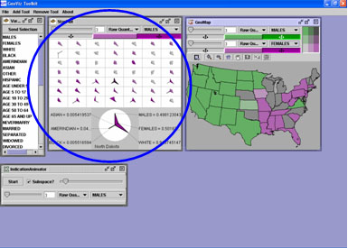

Disclaimer: This file is intended to give the user a brief understanding of the basic functionality found within the GeoViz ToolKit. It is not a troubleshooting help file. If you are in need of technical assistance contact Frank Hardisty at the University of South Carolina.
The GeoViz Toolkit was developed from work conducted at the GeoVista Center at The Pennsylvania State University. To find out more about this program go to GeoVista Studio . These tools were developed for the visualization of multidimensional, geographic data. The GeoViz Toolkit is an application version of GeoVista Studio in which a sample of these components were adapted to a more “user-friendly” environment. This toolkit was developed by Frank Hardisty, Aaron Myers, and Ke Liao at the University of South Carolina. In the GeoViz Toolkit, all of the components are coordinated with each other. For example, if you select a different set of variables in one component then that change will be reflected in all of the other components being used. The color scheme, however, is not coordinated between the different components.

This menu allows the user to load a few pre-defined data sets, save the current user-defined component layout, and then open that saved layout. The default setting has a Star Plot, a GeoMap, Variable Picker, and Selection Animator. Under the file menu the user is allowed to load predefined U.S. Data, South Carolina Data, and U.S. Population Cartogram. In theory, the load shapefile feature would allow one to load any shapefile with associated data, but this will most likely not function with all data sets. The user can also save a component layout view and the reopen it later with the Save Layout and Load Layout Features.

This allows the user to select from a list of tools, which ones to add to the Current Layout.

This menu allows the user to select which active tools to remove from the current layout.

This is a geographic map of the area defined by the selected data set. This map displays how two variables relate to each other over geographic space. To change the color of variables simply double-click on the color bar under each of the variable names. You can also change the number of divisions by moving the slider up or down. By clicking on the variable name a drop down menu allows you to switch to the other variables in the data set.

The Link Graph is a way of visualizing how closely observations are related to each other based on selected variables. By clicking on the observation name, other related observations will be shown. Moving the top slider will zoom, rotate, or move the locality the view window. By moving the slider on the right and bottom, will re-orient the view. The variable button allows the user to redefine the selected variables.

Functionality same a main Variable Picker, must hit ‘Close' after sending selection to continue working.

The Subspace Link Graph displays visually how the variables are related to each other. The functionality of the view window is similar to that of the link Graph mentioned above. One difference is the send selection button. By selecting the different variable from the view window it is possible to send that selection to show in the other active components.

Main Panel (Parallel Coordinate Plot (PCP) allows for the visualization of highly multivariate data. Each selected variable is plotted as a vertical axis and each observation is shown as a line connected to each of these axes. This orientation allows for an inspection of how each observation changes from one variable to another, and to compare how the observations are related among the different variables. The scale selection button allows the user to set the maximum and minimum values for the axes. For example, you can make them show their respective max and min, conform all variables to the same scale, etc.

This simply allows the user to view the table associated with the current data set.

Similarly to the Bivariate Map, this map shows how a single variable is changes across geographic space. The variable and color scheme selection is identical to that found in the Bivariate GeoMap. The functionality of the components are also the same.

The sonic classifier allows for data exploration utilizing the sense of sound. The variable is associated with the note on the classifier scale. There is a predefined set of sounds.

The Star Plot is a method of displaying multivariate data, in such a way that it become easier to analyze. Each star represents a single observation (i.e. States or Armories), with their associate values displayed upon each axis or spoke. The magnitude of each variable is consistent with the length of the star upon each of its spokes. Star plots are most useful comparing similar and dissimilar observations. (Source)


From this figure, we can see the observation is for New York State. Also, the variables associated with this observation are American Indian (AMERINDIAN), Percent Black Population (BLACK), Percent Female Population (FEMALE), and Percent of Population between the ages of 5 and 17 (AGES 5 TO 17), etc. Since New York is focuses in the lower pane, it is also highlighted in green in the upper pane. Now, in the upper pane, we can compare New York with several other states to find which ones are similar and which ones are not.
The selection animator is one of the default setting upon opening the toolkit. After hitting the start button, the selection animator will work through the data potentially showing patterns.

This tool allows the user to view the data based on all the different variables. It moves through the different variable and show clustered subsets of the each variable.

The condition manager allows the user to set conditions on which the variables will be displayed. This allows for additional way of view that dataset.

The Variable Picker automatically detects the variables for the data set. The User can change the selection by clicking on the desired variable, if multiple variables are desired the Control Key must be held while making the additional selections. Once all of the desired variables are chosen, then the User simply hits the send selection button to apply that selection to all of the components.